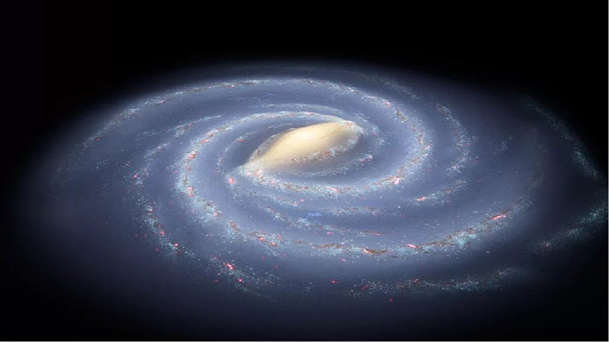

Discover the mysteries of the universe, from distant galaxies to the wonders of our solar system. Join us on a journey through the stars, where every celestial body tells a story waiting to be uncovered.
Astronomers estimate that the universe could contain up to one septillion stars – that’s a one followed by 24 zeros. Our Milky Way alone contains more than 100 billion, including our most well-studied star, the Sun.
Stars are giant balls of hot gas – mostly hydrogen, with some helium and small amounts of other elements. Every star has its own life cycle, ranging from a few million to trillions of years, and its properties change as it ages.
Stars form in large clouds of gas and dust called molecular clouds. Molecular clouds range from 1,000 to 10 million times the mass of the Sun and can span as much as hundreds of light-years. Molecular clouds are cold which causes gas to clump, creating high-density pockets. Some of these clumps can collide with each other or collect more matter, strengthening their gravitational force as their mass grows. Eventually, gravity causes some of these clumps to collapse. When this happens, friction causes the material to heat up, which eventually leads to the development of a protostar – a baby star. Batches of stars that have recently formed from molecular clouds are often called stellar clusters, and molecular clouds full of stellar clusters are called stellar nurseries.
At first, most of the protostar’s energy comes from heat released by its initial collapse. After millions of years, immense pressures and temperatures in the star’s core squeeze the nuclei of hydrogen atoms together to form helium, a process called nuclear fusion. Nuclear fusion releases energy, which heats the star and prevents it from further collapsing under the force of gravity.
Astronomers call stars that are stably undergoing nuclear fusion of hydrogen into helium main sequence stars. This is the longest phase of a star’s life. The star’s luminosity, size, and temperature will slowly change over millions or billions of years during this phase. Our Sun is roughly midway through its main sequence stage. A star’s gas provides its fuel, and its mass determines how rapidly it runs through its supply, with lower-mass stars burning longer, dimmer, and cooler than very massive stars. More massive stars must burn fuel at a higher rate to generate the energy that keeps them from collapsing under their own weight. Some low-mass stars will shine for trillions of years – longer than the universe has currently existed – while some massive stars will live for only a few million years.
At the beginning of the end of a star’s life, its core runs out of hydrogen to convert into helium. The energy produced by fusion creates pressure inside the star that balances gravity’s tendency to pull matter together, so the core starts to collapse. But squeezing the core also increases its temperature and pressure, making the star slowly puff up. However, the details of the late stages of the star’s death depend strongly on its mass.
A low-mass star’s atmosphere will keep expanding until it becomes a subgiant or giant star while fusion converts helium into carbon in the core. (This will be the fate of our Sun, in several billion years.) Some giants become unstable and pulsate, periodically inflating and ejecting some of their atmospheres. Eventually, all the star’s outer layers blow away, creating an expanding cloud of dust and gas called a planetary nebula.
The star’s iron core collapses until forces between the nuclei push the brakes, then it rebounds. This change creates a shock wave that travels outward through the star. The result is a huge explosion called a supernova. The core survives as an incredibly dense remnant, either a neutron star or a black hole.
Material cast into the cosmos by supernovae and other stellar events will enrich future molecular clouds and become incorporated into the next generation of stars.
Galaxies consist of stars, planets, and vast clouds of gas and dust, all bound together by gravity. The largest contain trillions of stars and can be more than a million light-years across. The smallest can contain a few thousand stars and span just a few hundred light-years. Most large galaxies have supermassive black holes at their centers, some with billions of times the Sun’s mass.
Galaxies come in a variety of shapes, mostly spirals and ellipticals, as well as those with less orderly appearances, usually dubbed irregular.
Most galaxies are between 10 billion and 13.6 billion years old. Some are almost as old as the universe itself, which formed around 13.8 billion years ago. Astronomers think the youngest known galaxy formed approximately 500 million years ago.
Galaxies can organize into groups of about 100 or fewer members held together by their mutual gravity. Larger structures, called clusters, may contain thousands of galaxies. Groups and clusters can be arranged in superclusters, which are not gravitationally bound. Superclusters, empty voids, “walls” of galaxies, and other large-scale structures make up the cosmic web of matter in the universe.
Our home galaxy is called the Milky Way. It’s a spiral galaxy with a disk of stars spanning more than 100,000 light-years. Earth is located along one of the galaxy’s spiral arms, about halfway from the center. Our solar system takes about 240 million years to orbit the Milky Way just once.
From our perspective on Earth, the Milky Way looks like a faint, milky band of light arcing across the entire sky, which is how it got its name. This feature marks the central disk of our home galaxy seen edge on.
The Milky Way sits in a neighborhood with over 50 other galaxies called the Local Group. Its members range in size from dwarf galaxies (smaller galaxies with up to a few billion stars) to Andromeda, our nearest large galactic neighbor.
Black holes are among the most mysterious cosmic objects, much studied but not fully understood. These objects aren’t really holes. They’re huge concentrations of matter packed into very tiny spaces. A black hole is so dense that gravity just beneath its surface, the event horizon, is strong enough that nothing – not even light – can escape. The event horizon isn’t a surface like Earth’s or even the Sun’s. It’s a boundary that contains all the matter that makes up the black hole.
There is much we don’t know about black holes, like what matter looks like inside their event horizons. However, there is a lot that scientists do know about black holes.
Black holes don’t emit or reflect light, making them effectively invisible to telescopes. Scientists primarily detect and study them based on how they affect their surroundings: